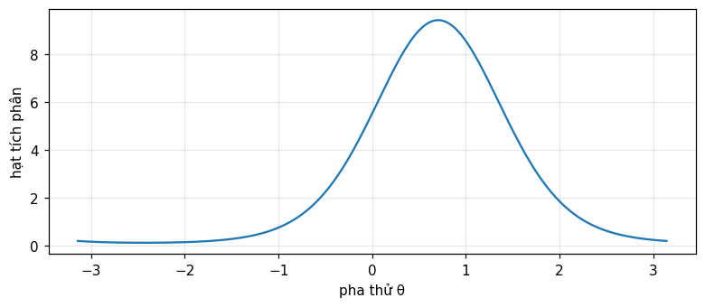

Phát hiện nhị phân và M-phân của tín hiệu tất định trong nhiễu Gauss trắng bằng khai triển Karhunen–Loève: bộ thu phối hợp (matched filter), tương quan, thống kê đủ, tham số phát hiện; ước lượng tuyến tính tham số tín hiệu; phát hiện với pha ngẫu nhiên và bộ lọc phối hợp không kết hợp (Barkat, chương 10).
Dùng khai triển Karhunen–Loève để rút gọn phát hiện tín hiệu liên tục trong nhiễu trắng về một bài toán Gauss hữu hạn chiều, và suy ra bộ thu tương quan/phối hợp.
Suy ra kiểm định nhị phân tổng quát với hai tín hiệu tương quan hệ số \rho, và nhận ra tín hiệu đối cực (\rho=-1) tối ưu.
Mở rộng sang phát hiện M-phân, dựng bộ thu "lớn nhất" cho tín hiệu trực giao cùng năng lượng, và tính xác suất lỗi bằng tích phân.
Ước lượng hợp lý cực đại một tham số tín hiệu tuyến tính bằng bộ tương quan, và xác nhận nó đạt cận Cramér–Rao.
Suy ra kiểm định tỉ số khả dĩ cho tín hiệu pha ngẫu nhiên, nhận ra hàm Bessel I_0, và dựng bộ lọc phối hợp không kết hợp (thu vuông góc).
Dùng nút, chấm tròn hoặc phím ← → để chuyển slide.
PHẦN 1/5
01
Phát hiện nhị phân đơn giản: bộ thu phối hợp
Bối cảnh: Tín hiệu liên tục Y(t)=s(t)+W(t) được khai triển Karhunen–Loève; chọn \varphi_1(t)=s(t)/\sqrt E làm hàm cơ sở đầu tiên, mọi hệ số khác không phụ thuộc giả thuyết.
Vướng mắc: Không gian quan sát vô hạn chiều rút gọn về một chiều duy nhất: T(Y)=Y_1 là thống kê đủ, đúng bài toán Gauss Y_1=\sqrt E+W_1 hay Y_1=W_1 đã gặp ở Ví dụ 5.1.
Giải pháp: Bộ thu tối ưu là bộ tương quan hoặc bộ lọc phối hợp có đáp ứng xung h(t)=\varphi_1(T-t); hiệu năng chỉ phụ thuộc tham số phát hiện d^2=2E/N_0.
Khai triển Karhunen–Loève rút gọn bài toán
Thống kê đủ một chiều duy nhất
Bộ thu tương quan và bộ lọc phối hợp
1/5 · Phát hiện nhị phân đơn giản: bộ thu phối hợp
Từ tham số rời rạc sang dạng sóng liên tục
Ở các chương 5, 6, 9 (module 21, 22, 24), quan sát là một số hữu hạn biến ngẫu nhiên. Chương này mở rộng sang dạng sóng liên tục: dưới H_1, máy phát gửi tín hiệu tất định đã biết s(t); dưới H_0, không gửi gì. Tại bộ thu, H_1{:}\,Y(t)=s(t)+W(t), H_0{:}\,Y(t)=W(t), 0\le t\le T, với W(t) nhiễu Gauss trắng trung bình 0, mật độ phổ công suất hai phía N_0/2 (Barkat, tr. 533 đến 535).
1/5 · Phát hiện nhị phân đơn giản: bộ thu phối hợp
Karhunen–Loève: đổi tín hiệu liên tục thành các hệ số rời rạc
Để dùng lại khung chương 5, cần một tập biến ngẫu nhiên đếm được. Khai triển Karhunen–Loève biểu diễn Y(t) qua các hệ số Y_k=\int_0^TY(t)\varphi_k(t)\,dt theo một tập hàm cơ sở trực chuẩn đầy đủ \{\varphi_k(t)\}. Chọn \varphi_1(t)=s(t)/\sqrt E (với E=\int_0^Ts^2(t)\,dt là năng lượng tín hiệu) làm hàm cơ sở đầu tiên; các \varphi_k(t), k\ge2, chỉ cần trực giao với \varphi_1(t) (Barkat, tr. 535 đến 536).
1/5 · Phát hiện nhị phân đơn giản: bộ thu phối hợp
Chỉ Y_1 mang thông tin về giả thuyết
Với cách chọn này, Y_1=\sqrt E+W_1 dưới H_1 và Y_1=W_1 dưới H_0; mọi hệ số Y_k, k\ge2, chỉ bằng W_k (hệ số nhiễu Karhunen–Loève) bất kể giả thuyết nào — không mang thông tin quyết định. Vì các W_j,W_k không tương quan và đồng thời Gauss nên độc lập thống kê; do đó Y_k, k\ge2, độc lập với Y_1 và không ảnh hưởng quyết định. Thống kê đủ là T(Y)=Y_1 — không gian quan sát vô hạn chiều rút về một chiều duy nhất (Barkat, tr. 536 đến 537).
1/5 · Phát hiện nhị phân đơn giản: bộ thu phối hợp
Chính là Ví dụ 5.1, chỉ khác cách sinh dữ liệu
Vì W_1 Gauss trung bình 0, phương sai E[W_1^2]=(N_0/2)\int_0^T\varphi_1^2(t)\,dt=N_0/2 (do \int\varphi_1^2=1), bài toán rút về đúng Y_1=\sqrt E+W_1 hay Y_1=W_1 với m=\sqrt E, \sigma^2=N_0/2 — chính là Ví dụ 5.1 (module 21) (Barkat, tr. 537). Áp trực tiếp kết quả đó: ngưỡng \gamma=(N_0/2\sqrt E)\ln\eta+\sqrt E/2, và tham số phát hiện d^2=2E/N_0.
Tham số phát hiện của phát hiện nhị phân đơn giản
d^2=\frac{2E}{N_0}
1/5 · Phát hiện nhị phân đơn giản: bộ thu phối hợp
Bộ thu tương quan và bộ lọc phối hợp
Có hai cách hiện thực hóa việc tính Y_1=\int_0^Ty(t)\varphi_1(t)\,dt: bộ thu tương quan (nhân y(t) với \varphi_1(t) rồi tích phân) hoặc bộ lọc phối hợp (matched filter) với đáp ứng xung h(t)=\varphi_1(T-t), 0\le t\le T, lấy mẫu đầu ra tại t=T (Barkat, tr. 537 đến 538). Cả hai cho cùng Y_1; bộ lọc phối hợp có tên gọi vì đáp ứng xung của nó khớp (matched) với dạng đảo thời gian của tín hiệu cần dò.
1/5 · Phát hiện nhị phân đơn giản: bộ thu phối hợp
Số đo: d^2, ngưỡng, P_D,P_F khớp mô phỏng
Số đo: với E=4, N_0=1, \eta=1: d^2=2E/N_0 = 8, ngưỡng \gamma = 1. Mô phỏng Monte Carlo 300\,000 lần: P_D lý thuyết Q((\gamma-\sqrt E)/\sqrt{N_0/2}) = 0.9214 khớp mô phỏng 0.9216; P_F lý thuyết Q(\gamma/\sqrt{N_0/2}) = 0.0786 khớp mô phỏng 0.0785.
1/5 · Phát hiện nhị phân đơn giản: bộ thu phối hợp
Tự kiểm tra phần 1
Vì sao chỉ Y_1 mang thông tin quyết định, còn Y_k, k\\ge2, thì không?
Bộ lọc phối hợp có đáp ứng xung dạng nào?
Tham số phát hiện d^2 của phát hiện nhị phân đơn giản bằng công thức nào?
Gợi ý: vì \varphi_1 được chọn theo dạng tín hiệu, còn các \varphi_k khác chỉ chứa nhiễu bất kể giả thuyết; h(t)=\varphi_1(T-t); d^2=2E/N_0.
PHẦN 2/5
02
Phát hiện nhị phân tổng quát: tín hiệu đối cực tối ưu
Bối cảnh: Với hai tín hiệu tất định s_1(t),s_0(t) bất kỳ, trực chuẩn hóa Gram–Schmidt cho hai hàm cơ sở, rút bài toán về không gian hai chiều với hệ số tương quan \rho.
Vướng mắc: Áp kết quả đồng hiệp phương sai của module 24: tham số phát hiện d^2=2(E_1+E_0-2\rho\sqrt{E_1E_0})/N_0, và xác suất lỗi tối thiểu P(\varepsilon)=Q(\sqrt{2\alpha/N_0}).
Giải pháp:P(\varepsilon) giảm khi \alpha=E_1+E_0-2\rho\sqrt{E_1E_0} tăng; với năng lượng cố định, \alpha cực đại khi \rho=-1 — tín hiệu đối cực (s_0=-s_1) luôn tối ưu.
Gram–Schmidt rút về hai chiều
Tham số phát hiện và xác suất lỗi
Vì sao tín hiệu đối cực tối ưu
2/5 · Phát hiện nhị phân tổng quát: tín hiệu đối cực tối ưu
Hai tín hiệu bất kỳ: cần hai hàm cơ sở
Tổng quát hóa: H_1{:}\,Y(t)=s_1(t)+W(t), H_0{:}\,Y(t)=s_0(t)+W(t), với năng lượng E_1,E_0 và hệ số tương quan \rho=\frac{1}{\sqrt{E_0E_1}}\int_0^Ts_0(t)s_1(t)\,dt, -1\le\rho\le1. Dùng Gram–Schmidt: \varphi_1(t)=s_1(t)/\sqrt{E_1}, và \varphi_2(t) là phần của s_0(t) trực giao với \varphi_1(t), chuẩn hóa lại (Barkat, tr. 544 đến 546).
2/5 · Phát hiện nhị phân tổng quát: tín hiệu đối cực tối ưu
Bài toán rút về hai chiều: chính là module 24, phần 2
Trong hệ tọa độ mới, Y_1,Y_2 độc lập Gauss, hiệp phương sai C=(N_0/2)I giống nhau dưới cả hai giả thuyết, với trung bình vector m_1=[\sqrt{E_1},0]^T, m_0=[\rho\sqrt{E_0},\sqrt{E_0(1-\rho^2)}]^T (Barkat, tr. 546 đến 548). Đây chính xác là bài toán đồng hiệp phương sai của module 24: kiểm định tuyến tính hóa thành T(y)=y^T(m_1-m_0)\gtrless\gamma_1, và có thể viết lại bằng một bộ tương quan duy nhất, T(y)=\int_0^Ty(t)[s_1(t)-s_0(t)]\,dt.
2/5 · Phát hiện nhị phân tổng quát: tín hiệu đối cực tối ưu
Tham số phát hiện và xác suất lỗi
Tính d^2=\Delta m^TC^{-1}\Delta m với C=(N_0/2)I: d^2=\dfrac{2}{N_0}(E_1+E_0-2\rho\sqrt{E_1E_0}) (Barkat, tr. 550 đến 551). Với xác suất tiên nghiệm bằng nhau, tiêu chuẩn xác suất lỗi tối thiểu, kết quả module 21 áp trực tiếp: P(\varepsilon)=Q(d/2)=Q\!\left(\sqrt{2\alpha/N_0}\right), với \alpha\triangleq E_1+E_0-2\rho\sqrt{E_1E_0} (Barkat, tr. 551 đến 552).
2/5 · Phát hiện nhị phân tổng quát: tín hiệu đối cực tối ưu
Vì sao tín hiệu đối cực (\rho=-1) luôn tối ưu
P(\varepsilon) giảm khi \alpha tăng (với N_0 cố định); từ \alpha=E_1+E_0-2\rho\sqrt{E_1E_0}, với năng lượng E_1,E_0 cố định, \alpha cực đại khi \rho cực tiểu, tức \rho=-1 (Barkat, tr. 552). Khi đó s_0(t)=-s_1(t) — tín hiệu đối cực (antipodal). Nếu thêm E_0=E_1=E, kiểm định rút gọn thành T(y)=y^T(m_1-m_0)\gtrless0 — ngưỡng đúng giữa hai tín hiệu, không lệch về bên nào.
2/5 · Phát hiện nhị phân tổng quát: tín hiệu đối cực tối ưu
Số đo: P(\varepsilon) theo \rho, xác nhận đối cực tối ưu
Số đo: với E_1=4, E_0=3, N_0=1, \rho=-0.5: \alpha = 10.4641, d^2 = 20.9282, P(\varepsilon) lý thuyết = 0.0111, mô phỏng Monte Carlo 300\,000 lần khớp 0.0111. So sánh ba trường hợp cùng năng lượng: \rho=-1 (đối cực) cho P(\varepsilon) = 0.0042, nhỏ hơn hẳn \rho=0 (trực giao) cho 0.0307, và cả hai đều nhỏ hơn \rho=-0.5 ở trên — xác nhận đối cực luôn tốt nhất.
2/5 · Phát hiện nhị phân tổng quát: tín hiệu đối cực tối ưu
Tự kiểm tra phần 2
Hệ số tương quan \\rho giữa hai tín hiệu đo mức gì?
Tại sao bài toán phát hiện nhị phân tổng quát rút gọn đúng về module 24?
Giá trị \\rho nào cho xác suất lỗi nhỏ nhất, với năng lượng tín hiệu cố định?
Gợi ý: mức tương tự dạng sóng giữa s_0(t) và s_1(t); vì sau Gram–Schmidt, hiệp phương sai bằng nhau dưới cả hai giả thuyết (C=(N_0/2)I); \rho=-1 (tín hiệu đối cực).
PHẦN 3/5
03
Phát hiện M-phân: bộ thu "lớn nhất"
Bối cảnh: Với M tín hiệu s_k(t), khai triển Karhunen–Loève rút không gian quan sát về nhiều nhất K\le M chiều — số tín hiệu độc lập tuyến tính.
Vướng mắc: Với xác suất tiên nghiệm bằng nhau, tiêu chuẩn MAP rút về ML: chọn giả thuyết cực đại f_{Y|H_j}, tương đương chọn tín hiệu gần y nhất (khoảng cách nhỏ nhất).
Giải pháp: Với tín hiệu trực giao cùng năng lượng, thống kê đủ là T_j(y)=\int_0^Ty(t)s_j(t)\,dt — bộ thu "lớn nhất", và xác suất lỗi tính được bằng tích phân đóng.
Không gian quan sát rút về K\le M chiều
MAP rút về ML: khoảng cách nhỏ nhất
Bộ thu "lớn nhất" và xác suất lỗi
3/5 · Phát hiện M-phân: bộ thu "lớn nhất"
Từ hai giả thuyết lên M giả thuyết
Tổng quát hóa: H_k{:}\,Y(t)=s_k(t)+W(t), k=1,\ldots,M, mỗi tín hiệu năng lượng E_k, có thể tương quan với nhau qua hệ số \rho_{jk} (Barkat, tr. 557 đến 558). Dùng Gram–Schmidt trên M tín hiệu, chỉ cần K\le M hàm cơ sở nếu chỉ K trong M tín hiệu độc lập tuyến tính. Mọi Y_k, k>K, chỉ chứa nhiễu, không ảnh hưởng quyết định — không gian quan sát vô hạn chiều rút về K chiều.
3/5 · Phát hiện M-phân: bộ thu "lớn nhất"
MAP rút về ML khi xác suất tiên nghiệm bằng nhau
Quyết định tối ưu chọn giả thuyết cực đại xác suất hậu nghiệm P(H_j|Y) (module 21). Nếu P_j=1/M với mọi j, việc cực đại hậu nghiệm tương đương cực đại f_{Y|H_j}(y|H_j) — tiêu chuẩn MAP rút về ML. Vì mật độ Gauss, cực đại f_{Y|H_j} tương đương cực tiểu \sum_{k=1}^K(y_k-s_{kj})^2=\|y-s_j\|^2 — khoảng cách Euclid bình phương giữa quan sát và mỗi tín hiệu (Barkat, tr. 559 đến 560).
Tín hiệu trực giao, cùng năng lượng: bộ thu "lớn nhất"
Nếu mọi tín hiệu có cùng năng lượng E, khai triển \|y-s_j\|^2=\|y\|^2-2y^Ts_j+E; vì \|y\|^2 và E giống nhau ở mọi j, cực tiểu khoảng cách tương đương cực đại y^Ts_j=\int_0^Ty(t)s_j(t)\,dt (Barkat, tr. 560). Bộ thu tối ưu tính M giá trị tương quan T_j(y)=\int_0^Ty(t)s_j(t)\,dt và chọn giả thuyết có giá trị lớn nhất — gọi là bộ thu \"lớn nhất\" (\"largest of\" receiver).
3/5 · Phát hiện M-phân: bộ thu "lớn nhất"
Xác suất lỗi cho M tín hiệu trực giao
Với tín hiệu trực giao (\rho_{jk}=0), các T_k độc lập Gauss: dưới H_1, T_1\sim\mathcal N(E,N_0/2) còn T_k\sim\mathcal N(0,N_0/2), k\ge2. Xác suất quyết định đúng là P_c=P(T_2<T_1,\ldots,T_M<T_1|H_1), tính bằng tích phân lồng: P_c=\int_{-\infty}^\infty f_{T_1|H_1}(t_1|H_1)\left[\int_{-\infty}^{t_1}f_{T_k|H_1}(t_k|H_1)\,dt_k\right]^{M-1}dt_1, và P(\varepsilon)=1-P_c (Barkat, tr. 560 đến 562).
Xác suất lỗi cho M tín hiệu trực giao cùng năng lượng
Số đo: với M=4, E=2, N_0=1: xác suất lỗi tính bằng tích phân số của công thức trên là 0.1772, và mô phỏng Monte Carlo 300\,000 lần (sinh trực tiếp T_1,\ldots,T_M độc lập Gauss và đếm số lần một T_k, k\ge2, vượt T_1) cho 0.1766 — khớp nhau, xác nhận công thức tích phân đúng mà không cần bảng tra hay xấp xỉ.
3/5 · Phát hiện M-phân: bộ thu "lớn nhất"
Tự kiểm tra phần 3
Khi xác suất tiên nghiệm bằng nhau, tiêu chuẩn MAP rút gọn thành tiêu chuẩn nào?
Bộ thu \"lớn nhất\" áp dụng được khi tín hiệu thỏa điều kiện gì?
Xác suất lỗi cho M tín hiệu trực giao được tính bằng cách nào?
Gợi ý: tiêu chuẩn hợp lý cực đại (ML); khi mọi tín hiệu trực giao và cùng năng lượng; bằng tích phân lồng của các mật độ Gauss độc lập.
PHẦN 4/5
04
Ước lượng tuyến tính tham số tín hiệu
Bối cảnh: Với Y(t)=\theta s(t)+W(t), \theta tham số cần ước lượng (tuyến tính vào s(t)), khai triển Karhunen–Loève lại rút về đúng Y_1=\theta\sqrt E+W_1 — một chiều duy nhất mang thông tin.
Vướng mắc: Ước lượng ML \hat\theta_{ml}=Y_1/\sqrt E chính là bộ tương quan chuẩn hóa; không chệch, và đạt đúng cận Cramér–Rao N_0/(2E) — một ước lượng hiệu quả.
Giải pháp: Đây là cầu nối trực tiếp giữa lý thuyết ước lượng của module 22 và bài toán dạng sóng của chương này — cùng công cụ, khác đối tượng (tham số biên độ thay vì mẫu rời rạc).
Mô hình tín hiệu tuyến tính \theta s(t)
Ước lượng ML là một bộ tương quan
Số đo: không chệch và đạt cận Cramér–Rao
4/5 · Ước lượng tuyến tính tham số tín hiệu
Mô hình: tham số nhân tuyến tính vào dạng sóng đã biết
Xét Y(t)=\theta s(t)+W(t), 0\le t\le T, với s(t) đã biết (năng lượng E) và \theta là tham số vô hướng cần ước lượng — ví dụ biên độ tín hiệu chưa biết. Ánh xạ \theta\mapsto\theta s(t) tuyến tính (s(t,\theta_1+\theta_2)=s(t,\theta_1)+s(t,\theta_2)), nên gọi là bài toán ước lượng tuyến tính (Barkat, tr. 572 đến 573).
4/5 · Ước lượng tuyến tính tham số tín hiệu
Lại rút về Y_1: đúng kỹ thuật Karhunen–Loève của phần 1
Dùng cùng \varphi_1(t)=s(t)/\sqrt E: Y_1=\int_0^TY(t)\varphi_1(t)\,dt=\theta\sqrt E+W_1, còn Y_k, k>1, chỉ bằng W_k, không phụ thuộc \theta. Do đó Y_1 là thống kê đủ cho \theta, Gauss trung bình \theta\sqrt E, phương sai N_0/2 (Barkat, tr. 573).
4/5 · Ước lượng tuyến tính tham số tín hiệu
Ước lượng ML: giải phương trình hợp lý cho Y_1 Gauss
Hàm hợp lý L(\theta)=f_{Y_1|\Theta}(y_1|\theta) Gauss theo \theta; giải \partial\ln L/\partial\theta=0 cho (\sqrt E/N_0)(y_1-\theta\sqrt E)\cdot2=0, tức \hat\theta_{ml}=Y_1/\sqrt E — bộ tương quan giữa Y(t) và s(t), chuẩn hóa theo \sqrt E (Barkat, tr. 573 đến 574). Về mặt vật lý, đây chính là bộ thu tương quan của phần 1, chỉ đọc ra biên độ ước lượng thay vì đưa ra quyết định nhị phân.
E[\hat\theta_{ml}]=E[Y_1]/\sqrt E=\theta\sqrt E/\sqrt E=\theta — không chệch. Từ đạo hàm hàm hợp lý, \partial\ln L/\partial\theta=(2\sqrt E/N_0)(y_1-\theta\sqrt E) có đúng dạng c(\theta)[\hat\theta-\theta] với c=2E/N_0 — điều kiện hiệu quả của module 22 (Barkat, tr. 574 đến 575). Cận Cramér–Rao đạt được đúng bằng N_0/(2E).
4/5 · Ước lượng tuyến tính tham số tín hiệu
Số đo: kỳ vọng, phương sai, và cận Cramér–Rao khớp mô phỏng
Số đo: với E=4, N_0=1, \theta thật = 2.3, mô phỏng 300\,000 lần: trung bình \hat\theta_{ml} đo được là 2.2989 (khớp \theta=2.3); phương sai đo được là 0.1249, khớp cận Cramér–Rao N_0/(2E) = 0.125 — xác nhận \hat\theta_{ml} vừa không chệch vừa hiệu quả.
4/5 · Ước lượng tuyến tính tham số tín hiệu
Tự kiểm tra phần 4
Vì sao mô hình Y(t)=\\theta s(t)+W(t) được gọi là bài toán ước lượng \"tuyến tính\"?
Ước lượng ML \\hat\\theta_{ml} tương ứng với thiết bị vật lý nào đã gặp ở phần 1?
Phương sai của \\hat\\theta_{ml} đạt đúng đại lượng nào?
Gợi ý: vì ánh xạ \theta\mapsto\theta s(t) thỏa nguyên lý chồng chất tuyến tính; bộ thu tương quan (correlator); cận Cramér–Rao N_0/(2E).
PHẦN 5/5
05
Tham số không mong muốn: pha ngẫu nhiên và bộ lọc phối hợp không kết hợp
Bối cảnh: Nhiều bài toán thực tế (radar, thông tin liên lạc) có tín hiệu với pha ban đầu không biết, mô hình hóa như biến ngẫu nhiên đều trên [-\pi,\pi] — một tham số "không mong muốn".
Vướng mắc: Lấy trung bình tỉ số khả dĩ theo pha ngẫu nhiên cho một tích phân dạng \int e^{a\cos\theta+b\sin\theta}d\theta, đúng bằng định nghĩa hàm Bessel biến đổi bậc 0, I_0(\sqrt{a^2+b^2}).
Giải pháp: Kiểm định tối ưu chỉ cần bao hình r=\sqrt{y_c^2+y_s^2} của hai thành phần vuông góc — bộ lọc phối hợp không kết hợp (incoherent matched filter), hiện thực bằng bộ thu vuông pha và tách bao hình.
Tham số không mong muốn: pha ngẫu nhiên
Trung bình theo pha cho hàm Bessel I_0
Bộ lọc phối hợp không kết hợp
5/5 · Tham số không mong muốn: pha ngẫu nhiên và bộ lọc phối hợp không kết hợp
Khi tín hiệu không hoàn toàn biết trước: tham số không mong muốn
Trong nhiều ứng dụng (tín hiệu dội về ở radar, kênh fading), tín hiệu thu có một hay nhiều tham số không biết — gọi là tham số không mong muốn (unwanted parameters), khác với các phần trước nơi s_1(t),s_0(t) hoàn toàn xác định trước. Nếu tham số ngẫu nhiên với mật độ tiên nghiệm đã biết, lấy trung bình tỉ số khả dĩ theo mật độ đó khi K\to\infty trong khai triển Karhunen–Loève (Barkat, tr. 580 đến 582).
5/5 · Tham số không mong muốn: pha ngẫu nhiên và bộ lọc phối hợp không kết hợp
Ví dụ chuẩn: pha ngẫu nhiên đều trên [-\pi,\pi]
Xét H_1{:}\,Y(t)=A\cos(\omega_ct+\Theta)+W(t), H_0{:}\,Y(t)=W(t), biên độ A và tần số \omega_c đã biết, còn pha \Theta ngẫu nhiên đều trên [-\pi,\pi] (Barkat, tr. 583 đến 584). Định nghĩa hai thành phần vuông pha y_c=\int_0^Ty(t)\cos\omega_ct\,dt, y_s=\int_0^Ty(t)\sin\omega_ct\,dt; khai triển \cos(\omega_ct+\theta)=\cos\omega_ct\cos\theta-\sin\omega_ct\sin\theta để tách phần phụ thuộc \theta.
5/5 · Tham số không mong muốn: pha ngẫu nhiên và bộ lọc phối hợp không kết hợp
Trung bình theo pha: xuất hiện hàm Bessel I_0
Lấy trung bình tỉ số khả dĩ theo \theta đều trên [-\pi,\pi] cho \frac{1}{2\pi}\int_{-\pi}^\pi\exp\left[\frac{2A}{N_0}(y_c\cos\theta-y_s\sin\theta)\right]d\theta — đúng định nghĩa tích phân của hàm Bessel biến đổi bậc 0: \frac1{2\pi}\int_{-\pi}^\pi e^{a\cos x+b\sin x}\,dx=I_0(\sqrt{a^2+b^2}) (Barkat, tr. 584 đến 585). Kết quả: \Lambda=e^{-A^2T/2N_0}I_0\!\left(\frac{2A}{N_0}\sqrt{y_c^2+y_s^2}\right).
5/5 · Tham số không mong muốn: pha ngẫu nhiên và bộ lọc phối hợp không kết hợp
Kiểm định chỉ cần bao hình r: bộ lọc phối hợp không kết hợp
Vì I_0(\cdot) tăng đơn điệu, kiểm định \Lambda\gtrless\eta tương đương r=\sqrt{y_c^2+y_s^2}\gtrless\gamma_2 — chỉ cần bao hình của hai thành phần vuông pha, không cần biết pha thật \Theta (Barkat, tr. 585 đến 587). Hiện thực bằng bộ lọc phối hợp (hay tương quan) với \cos\omega_ct và \sin\omega_ct, bình phương từng nhánh, cộng lại, rồi so ngưỡng — gọi là bộ lọc phối hợp không kết hợp (incoherent matched filter) hay bộ thu vuông pha (quadrature receiver).
5/5 · Tham số không mong muốn: pha ngẫu nhiên và bộ lọc phối hợp không kết hợp
Số đo: tích phân trung bình theo pha khớp hàm Bessel đóng
Số đo: với A=1.5, N_0=1, tín hiệu pha thật \theta=0.7 rad, tính y_c,y_s từ một đoạn tín hiệu mẫu, rồi r=\sqrt{y_c^2+y_s^2}. Tích phân số trực tiếp \frac1{2\pi}\int_{-\pi}^\pi\exp\left[\frac{2A}{N_0}(y_c\cos\theta-y_s\sin\theta)\right]d\theta cho 2.7172, khớp giá trị hàm Bessel đóng I_0(2Ar/N_0) = 2.7172 — xác nhận công thức I_0 đúng, không cần giả định gì thêm ngoài định nghĩa tích phân của nó.

Hình 1. Hạt của tích phân trung bình theo pha, dùng để suy ra tỉ số khả dĩ dạng hàm Bessel I0 của bài toán pha ngẫu nhiên.
5/5 · Tham số không mong muốn: pha ngẫu nhiên và bộ lọc phối hợp không kết hợp
Tự kiểm tra phần 5
Tham số \"không mong muốn\" khác tham số đã biết trước ở điểm nào?
Việc lấy trung bình tỉ số khả dĩ theo pha ngẫu nhiên đều dẫn tới hàm đặc biệt nào?
Bộ lọc phối hợp không kết hợp chỉ cần biết đại lượng nào của tín hiệu thu, không cần biết pha thật?
Gợi ý: giá trị của nó không biết trước, chỉ biết mật độ xác suất (ngẫu nhiên); hàm Bessel biến đổi bậc 0, I_0; bao hình r=\sqrt{y_c^2+y_s^2} của hai thành phần vuông pha.
TỔNG KẾT
Điều cần mang theo
Khai triển Karhunen–Loève rút gọn phát hiện dạng sóng liên tục trong nhiễu trắng về một bài toán Gauss hữu hạn chiều; với phát hiện nhị phân đơn giản, chỉ một chiều duy nhất (Y_1) mang thông tin — chính là Ví dụ 5.1.
Phát hiện nhị phân tổng quát rút về đúng bài toán đồng hiệp phương sai của module 24: d^2=2(E_1+E_0-2\rho\sqrt{E_1E_0})/N_0; tín hiệu đối cực (\rho=-1) luôn tối ưu.
Phát hiện M-phân với xác suất tiên nghiệm bằng nhau rút MAP về ML (khoảng cách nhỏ nhất); tín hiệu trực giao cùng năng lượng cho bộ thu "lớn nhất", xác suất lỗi tính bằng tích phân lồng các mật độ Gauss độc lập.
Ước lượng tuyến tính \theta s(t) dùng lại đúng kỹ thuật Karhunen–Loève, cho \hat\theta_{ml}=Y_1/\sqrt E — một bộ tương quan, không chệch, đạt cận Cramér–Rao N_0/(2E).
Với pha ngẫu nhiên (tham số không mong muốn), lấy trung bình tỉ số khả dĩ cho hàm Bessel I_0; kiểm định tối ưu chỉ cần bao hình r=\sqrt{y_c^2+y_s^2} — bộ lọc phối hợp không kết hợp.
📜 Bối cảnh lý thuyết & lịch sử
Lý thuyết bộ lọc phối hợp (matched filter) bắt nguồn từ công trình của D. O. North những năm 1943 cho radar quân sự thời Thế chiến II; khai triển Karhunen–Loève mang tên Kari Karhunen và Michel Loève, phát triển độc lập những năm 1940 trong lý thuyết quá trình ngẫu nhiên. Bộ lọc phối hợp không kết hợp và hàm Bessel I_0 trở thành công cụ chuẩn cho radar dò tìm mục tiêu pha ngẫu nhiên từ những năm 1950 (Barkat, tr. 533, 583, phần tài liệu tham khảo cuối chương).
🔎 Case study thực tế
Từ tín hiệu liên tục đến quyết định, ước lượng, và bao hình. Với E=4, N_0=1: phát hiện nhị phân đơn giản cho d^2=8, P_D=0.9214 khớp mô phỏng 0.9216. Mở rộng sang hai tín hiệu tương quan \rho=-0.5 (E_1=4,E_0=3): P(\varepsilon)=0.0111 khớp 0.0111, và đối cực (\rho=-1) cho 0.0042 nhỏ hơn hẳn trực giao 0.0307. Với M=4 tín hiệu trực giao cùng năng lượng E=2: xác suất lỗi tích phân 0.1772 khớp mô phỏng 0.1766. Ước lượng biên độ \theta=2.3 qua bộ tương quan cho trung bình 2.2989, phương sai 0.1249 khớp đúng cận Cramér–Rao 0.125. Cuối cùng, với pha ngẫu nhiên, tích phân trung bình theo pha 2.7172 khớp hàm Bessel đóng 2.7172.
Notebook tự sinh dữ liệu bằng mã, không cần tải file ngoài. Mọi con số trên trang này được in ra từ notebook và đối chiếu bằng hai phương pháp độc lập.
⚠️ Những bẫy diễn giải sai
"Tín hiệu trực giao (\rho=0) luôn là lựa chọn tốt nhất cho phát hiện nhị phân."
Sai: với năng lượng cố định, tín hiệu đối cực (\rho=-1) luôn cho xác suất lỗi nhỏ hơn tín hiệu trực giao — đã xác nhận bằng số ở phần 2 (0.0042 so với 0.0307). Trực giao chỉ tối ưu khi ràng buộc khác (như băng thông) ngăn cản dùng tín hiệu đối cực.
"Bộ lọc phối hợp không kết hợp cần biết pha thật của tín hiệu để hoạt động."
Ngược lại: điểm mấu chốt của bộ lọc phối hợp không kết hợp là nó KHÔNG cần biết pha — chỉ dùng bao hình r=\sqrt{y_c^2+y_s^2}, bất biến với pha thật (đã xác nhận số học ở phần 5). Đây chính là lý do nó phù hợp cho radar dò mục tiêu có pha dội về không biết trước.
"Ước lượng \hat\theta_{ml}=Y_1/\sqrt E chỉ là một công thức toán học, không liên quan gì đến bộ thu vật lý."
Sai: \hat\theta_{ml} chính xác là đầu ra của bộ thu tương quan (hay bộ lọc phối hợp) đã dựng ở phần 1, chỉ đọc số thay vì so ngưỡng nhị phân — cùng một mạch phần cứng phục vụ cả phát hiện lẫn ước lượng.
✅ Quiz tự kiểm tra
Bấm một đáp án để chấm ngay và xem giải thích. Kết quả không được lưu.
Nguồn tham khảo
M. Barkat, Signal Detection and Estimation, 2nd ed., Artech House, 2005, chương 10 (tr. 533 đến 590).
Tài liệu do chương trích: D. O. North (bộ lọc phối hợp, 1943); K. Karhunen, M. Loève (khai triển trực giao, thập niên 1940); H. L. Van Trees, Detection, Estimation, and Modulation Theory.
Nội dung được viết với sự hỗ trợ của AI (Claude), rồi được kiểm lại. Mọi con số do notebook Jupyter tính ra và đối chiếu bằng hai phương pháp độc lập; số trang trích dẫn lấy từ văn bản OCR của hai giáo trình gốc. Vẫn có thể còn sai sót, mong bạn báo lại.